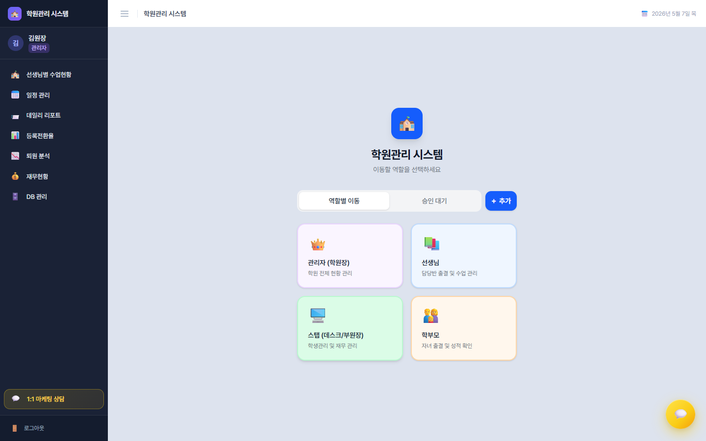
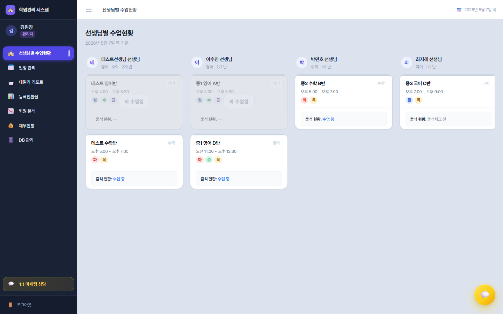
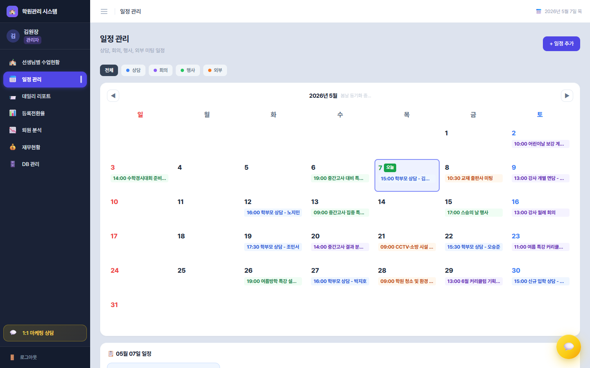
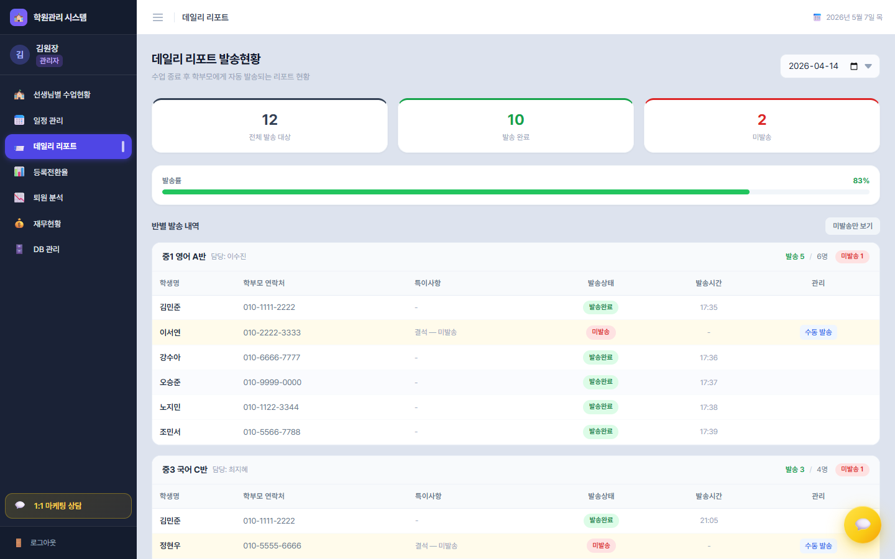
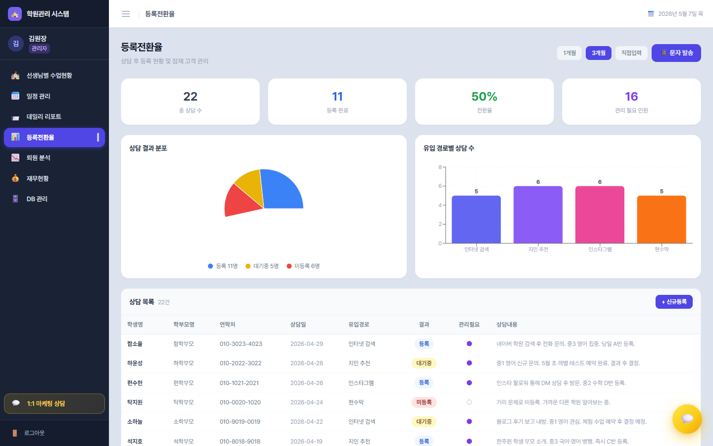
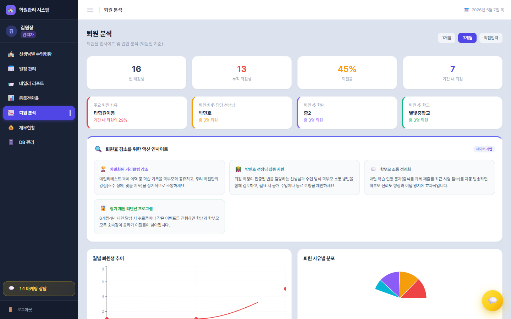
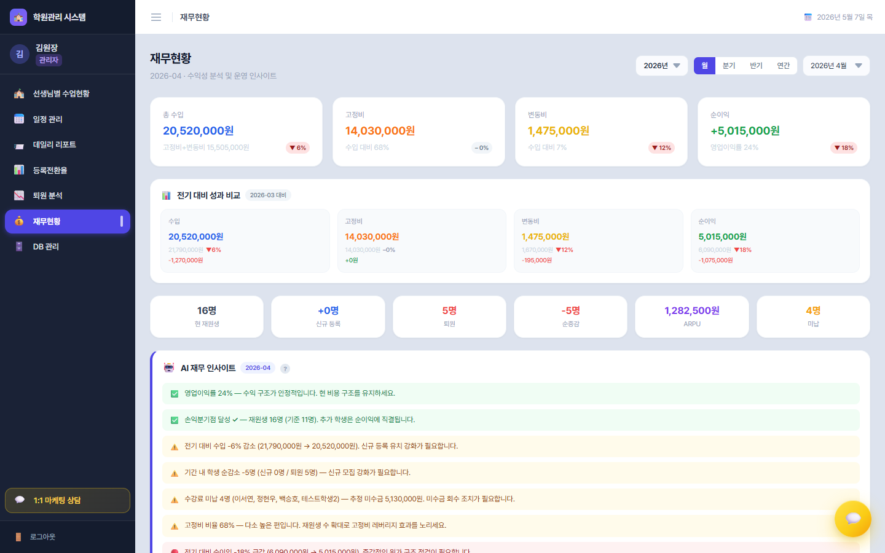
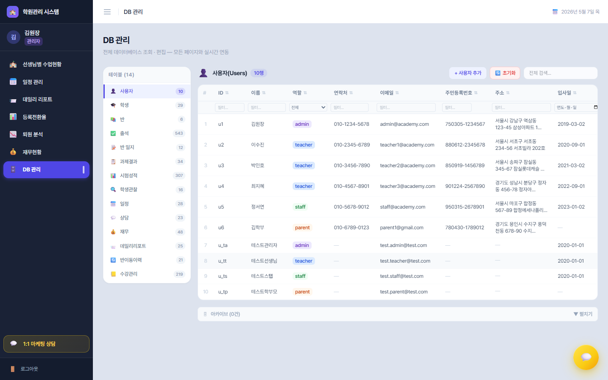

관리자(원장) 완전 가이드
좌측 사이드바의 7개 메뉴를 메뉴 → 탭/섹션 단위로 모두 분해해 정리했습니다. 각 화면이 어떤 정보를 보여주고 어떤 입력을 받는지 빠짐없이 설명합니다.

관리자 메뉴 구성
1. 관리자 허브 (메인 대시보드)
좌측 사이드바 로고를 누르거나 /admin으로 들어가면 이 화면입니다. 상단에 탭 2개가 있습니다.
📑 탭 1 — 역할별 이동
관리자가 다른 역할의 화면을 그대로 들여다볼 수 있는 공간입니다.
- 4개 역할 카드 (관리자 👑 / 선생님 📚 / 스탭 🖥️ / 학부모 👨👩👧) — 카드 클릭 → 해당 역할에 등록된 사용자 목록으로 진입
- 사용자 목록: 이름·이메일·역할 배지 표시. 행 우측에:
- 📧 이메일 재발송 — 비밀번호 설정 링크 재전송
- 🔑 비밀번호 재설정 — 관리자가 직접 새 비밀번호로 변경 (모달: 6자 이상 + 확인 입력)
- 좌측 상단 ➕ 새 사용자 추가 — 이름·이메일·역할을 입력해 즉시 계정 생성. "비밀번호 설정 이메일 발송" 체크박스 옵션
📑 탭 2 — 승인 대기 (배지에 신청 건수 표시)
신규 가입 신청을 일괄 처리하는 곳입니다.
- 각 신청자의 이름·이메일·신청 역할·신청 날짜
- 역할 변경 드롭다운으로 부여할 역할을 바꿀 수 있음
- 승인 / 거절 버튼 — 승인 즉시 학원 시스템에 정식 사용자로 진입
2. 선생님별 수업현황 🏫
탭 없이 섹션 구조. 모든 선생님의 오늘 수업을 카드로 한눈에 봅니다.

섹션 — 선생님별 카드 영역
가로 스크롤 가능한 선생님 묶음. 각 묶음은:
- 헤더: 선생님 이름 + 담당 과목 + 반 개수
- 반 카드 (선생님이 담당하는 반 수만큼): 각 카드 안에
- 반 이름 / 과목 배지 / 시간 / 요일(월~일 색상)
- 출석 현황 — 비수업일·출석체크 전·수업중·전원출석·부분 결석(결석/지각/조퇴 인원과 학생명)
- 과제 현황 — 우수·보통·미흡·미제출 인원
- 🔒 선생님 관찰 메모 — 학부모에게는 보이지 않는 학생별 메모. 잠금 아이콘과 함께 표시
- 비수업일 카드는 그레이스케일 + "비 수업일" 오버레이
- 카드를 클릭하면 해당 반의 상세 페이지(선생님 시점)로 즉시 이동
3. 일정 관리 📅

섹션 ① — 상단 마케팅 티커 ("뼈때리는 마케팅")
봄날(bomnal.net) 칼럼 최신 글이 자동으로 흘러갑니다. 제목을 클릭하면 새 탭에서 게시물이 바로 열립니다.
섹션 ② — 카테고리 필터 버튼
전체 / ●상담 / ●회의 / ●행사 / ●외부 색상별 토글.
섹션 ③ — 월 캘린더
- ◀ 년월 ▶ 네비 + 봄날 동기화 상태 인디케이터
- 요일 헤더 (일~토, 일·토 빨강·파랑)
- 각 날짜 셀: 봄날 공지(📢 빨강) / 내부 일정(시간+제목) — 4건 초과 시 "+N more" 축약
- 오늘 = 초록 테두리 + "오늘" 뱃지, 선택 = 파랑 테두리
- 캘린더 빈 날짜를 더블클릭하면 해당 날짜에 새 일정 모달이 바로 뜸
섹션 ④ — 선택 날짜 일정 패널 (캘린더 아래)
선택한 날짜의 모든 일정이 카드 그리드(1~4열)로 펼쳐집니다.
- 봄날 공지 카드 (빨강 배경): 제목·날짜 범위·설명·"새 탭에서 열기" 버튼
- 내부 일정 카드: 카테고리 배지 + 상담자 구분(학부모/강사/외부업체/기타) + 시간·담당자·연락처·내용. 카드 클릭 → 수정 모달
섹션 ⑤ — 일정 추가/수정 모달
- 상담 유형: 학생명(필수)·학부모명·연락처·내용
- 회의/행사/외부: 제목·시작/종료 시간(5분 단위)·담당자·구분·연락처·내용
- 저장 / 삭제 / 취소
4. 데일리 리포트 📨
탭 없이 섹션 구조. 선생님이 작성한 수업 보고서가 학부모에게 발송된 현황을 추적합니다.

섹션 ① — 상단 통계 카드 3개
- 전체 발송 대상 (회색)
- 발송 완료 (초록)
- 미발송 (빨강)
섹션 ② — 발송률 프로그레스 바
퍼센트 + 동적 폭. 80% 이상이면 초록, 미만이면 주황으로 색상이 바뀝니다.
섹션 ③ — 날짜 선택 + 필터 토글
특정 날짜를 골라 그날의 발송 현황만 보거나, "미발송만 보기" 토글로 이슈 학생만 추립니다.
섹션 ④ — 반별 발송 내역 (접이식)
반 단위로 접고 펼 수 있는 그룹. 그룹 헤더에는 반 이름·담당 선생님·미발송 건수.
- 테이블 6열: 학생명 · 학부모 연락처 · 특이사항 · 발송상태 · 발송시간 · 관리
- 미발송 행은 노란 배경(#FFFBEB)으로 즉시 인지
- 관리 열의 수동 발송 버튼 — 미발송 건만 노출. 클릭 → 학부모명·연락처 확인 모달 → 발송
5. 등록전환율 📊

섹션 ① — 기간 선택 + 문자 발송 버튼
1개월 / 3개월 / 직접입력(시작일~종료일) 토글. 우측 📱 문자 발송 버튼으로 관리 필요 인원에게 일괄 SMS.
섹션 ② — 핵심 지표 4카드
| 카드 | 내용 |
|---|---|
| 총 상담 수 | 기간 내 상담 발생 건수 (회색) |
| 등록 완료 | 실제 등록된 인원 (파랑) |
| 전환율 | 등록 / 상담 % (초록) |
| 관리 필요 | 대기·재상담·후속조치 필요 인원 (보라) |
섹션 ③ — 차트 2열 그리드
- 상담 결과 분포 (파이) — 등록/대기중/미등록 비율
- 유입 경로별 상담 수 (막대) — 호버 시 상담수·등록수·등록율 툴팁
섹션 ④ — 상담 목록 테이블
8열: 학생명·학부모명·연락처·상담일·유입경로·결과(등록/대기중/미등록)·관리필요(●/○)·상담내용.
- 행 클릭 → 인라인 편집 모드: 모든 필드(드롭다운/날짜/체크박스/textarea) 즉시 수정
- 상단의 "+ 신규 추가" 행으로 상담 즉석 등록
섹션 ⑤ — 문자 발송 모달
대상 인원 표시 → 대상자 목록(스크롤) → 메시지 textarea → "발송하기" 버튼.
6. 퇴원 분석 📉

섹션 ① — 기간 선택
1개월 / 3개월 / 직접입력 (퇴원일 기준).
섹션 ② — 핵심 지표 4카드
현 재원생 / 누적 퇴원생 / 퇴원율 / 기간 내 퇴원자 수.
섹션 ③ — 현황 요약 카드 4개 (좌측 컬러바)
- 주요 퇴원 사유 (빨강) — 비율 표시
- 퇴원생이 많은 담당 선생님 (주황)
- 퇴원이 많은 학년 (보라)
- 퇴원이 많은 학교 (초록)
섹션 ④ — 🔍 AI 인사이트 박스
"퇴원율 감소를 위한 액션 인사이트" — 퇴원 사유·학년·선생님 데이터를 종합해 자동 권장사항을 3열 카드로 출력. 각 카드에 아이콘·제목·설명.
섹션 ⑤ — 5개 차트
- 월별 퇴원생 추이 (라인)
- 퇴원 사유별 분포 (파이)
- 담당 선생님별 퇴원 수 (막대)
- 학년별 퇴원 수 (막대)
- 학교별 퇴원 수 (가로 막대)
섹션 ⑥ — 퇴원생 목록 테이블
학생명·학년·학교·등록일·퇴원일·퇴원사유(빨강 배지)·재원기간(개월).
7. 재무현황 💰

섹션 ① — 기간 선택 (우상단)
연도 (2024~2027) + 기간 유형(월/분기/반기/연간) + 상세 드롭다운.
섹션 ② — 핵심 지표 4카드 (전기 대비 표시)
총 수입(파랑) / 고정비(주황) / 변동비(노랑) / 순이익(초록·빨강) — 각 카드에 수입 대비 비율과 전기 대비 증감율 배지.
섹션 ③ — 전기 대비 성과 비교 2×2
현기 값·전기 값·차이(원)·변화율(%)을 한 줄로.
섹션 ④ — 재원생 지표 6카드
현 재원생 / 신규 등록 / 퇴원 / 순증감 / ARPU(1인당 수강료) / 미납 건수.
섹션 ⑤ — 🤖 AI 재무 인사이트
이익률·비용 구조·손익분기점·이탈률·마케팅 효율을 평가해 4가지 색상으로 자동 권장:
- 🟢 양호 / 🟡 주의 / 🔴 위험 / ℹ️ 참고
- "인사이트 도출 근거" 툴팁(?)에서 수식·기준을 모두 공개
- 담당자 총평 영역 — 직접 textarea 입력
섹션 ⑥ — 🎯 수익 개선 시나리오 3카드 (시뮬레이션)
① 학생 5명 추가 모집 / ② 변동비 10% 절감 / ③ 수강료 5% 인상 — 각 시나리오의 순이익 변화를 즉시 미리보기.
섹션 ⑦ — 차트 2개
- 월별 수입/고정비/변동비 (스택 막대)
- 월별 순이익 추이 (라인)
섹션 ⑧ — 수익성 분석 3카드
- 손익분기점 — 고정비 / ARPU / BEP 학생 수 / 현재 재원생 / 진행 바 / 비용 구조 비율
- 선생님 효율 — 강사별 담당 반·학생·수강료 기여
- 반별 정원 — 8명+(초록) / 5~7명(주황) / 5명 미만(빨강)
섹션 ⑨ — 마케팅 채널별 효율 테이블
유입 채널·상담수·등록수·전환율·효율 평가(집중 투자/유지/개선).
섹션 ⑩ — 상세 내역 3섹션 (수입 / 고정비 / 변동비)
각 섹션 헤더에 합계·건수. 행 클릭 → 인라인 편집 모달(날짜·항목·금액·설명·삭제).
섹션 ⑪ — 인사이트 평가 기준 수정 모달
영업이익률·고정비 비율·이탈률의 양호/주의/위험 임계값을 직접 조정.
8. DB 관리 🗄️

섹션 ① — 좌측 테이블 목록 (14개)
👤 사용자 · 🎓 학생 · 📚 반 · ✅ 출석 · 📝 반 일지 · 📋 과제결과 · 📊 시험성적 · 🔍 학생관찰 · 📅 일정 · 💬 상담 · 💰 재무 · 📨 데일리리포트 · 🔄 반이동이력 · 📒 수강관리 — 각 테이블 아이콘·이름·행 개수 배지.
섹션 ② — 상단 도구모음
- 테이블 정보 + 필터링 후 행 수
- 월 필터 (해당 테이블만)
- ➕ 새 행 추가 토글
- 🔄 초기화 (목 데이터로 리셋, 확인 모달)
- 🔎 전체 검색 (모든 필드 대상)
섹션 ③ — 메인 테이블
- 헤더 행에 컬럼별 필터(텍스트/date/select) + 정렬(▲▼⇅)
- ID 참조 자동 해제 (학생명 등으로 표시), 배열 값은 작은 배지
- 행 클릭 → 인라인 편집(타입별 위젯) → 저장 / 취소
- 관리 열에 🗑️ 아카이브 버튼
섹션 ④ — 페이지네이션
1~20 / 100 형식. 첫·이전·번호·다음·마지막 네비.
섹션 ⑤ — 🗄 아카이브 (접이식)
삭제된 데이터를 모두 보관. 노란 배경 + 보관일 + 복구 버튼.
특수 자동 동기화
- 양방향 연동:
students.classIds↔classes.studentIds - 자동 이력: 반 변경 시
classHistory자동 기록 - 가상 컬럼: 시험성적의 반평균/학년평균/학원평균은 자동 계산
매일 / 매주 / 매월 루틴
매일 (5분)
- 데일리 리포트 — 미발송 0 만들기
- 마케팅 티커 글 1개 읽기
매주 월요일 (15분)
- 퇴원 분석 — AI 인사이트 확인
- 등록전환율 — 깔때기 점검
- 일정 관리 — 이번 주 점검
매월 1일 (30분)
- 재무현황 — 지난달 마감 + AI 인사이트 검토
- 퇴원 분석 — 사유 분포 회의 자료
- 관리자 허브 — 가입 승인 일괄 처리